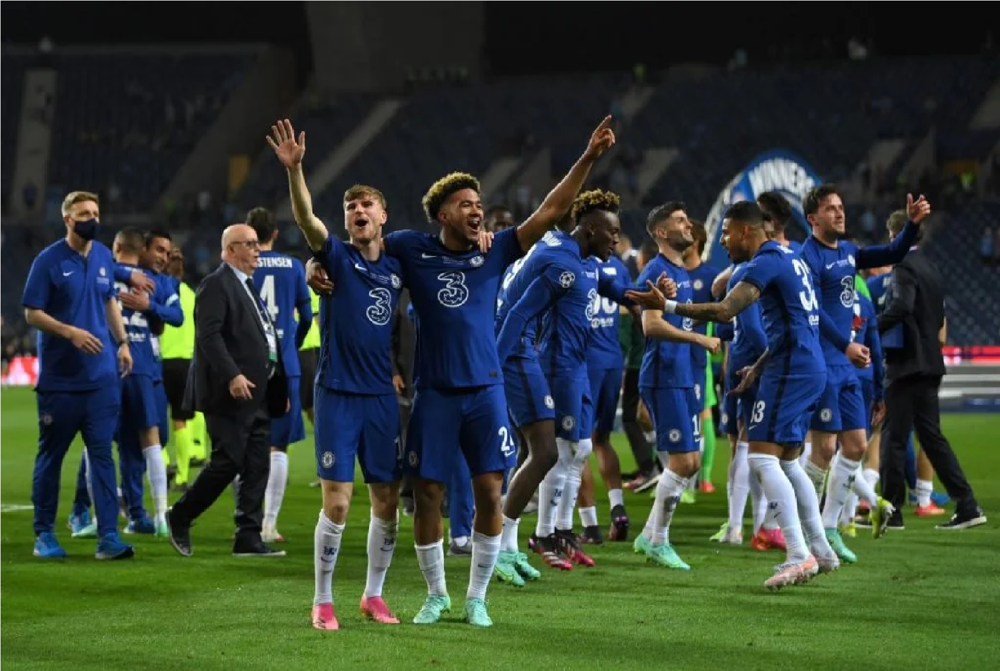
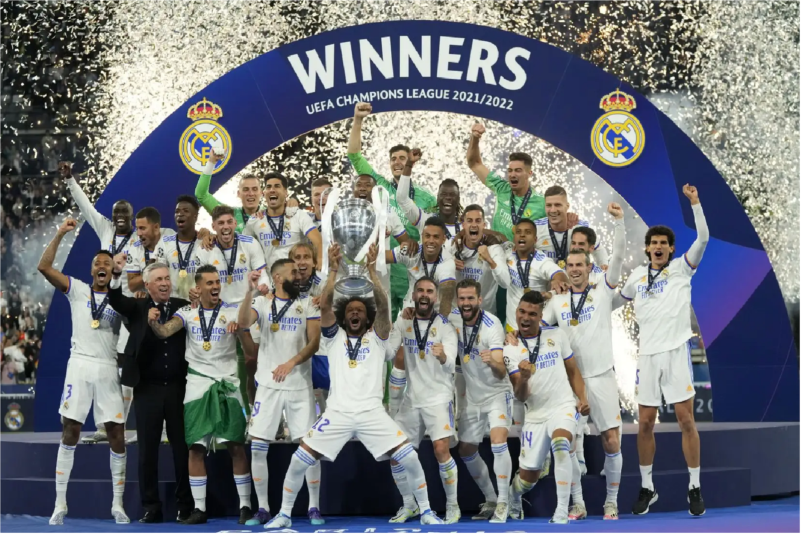
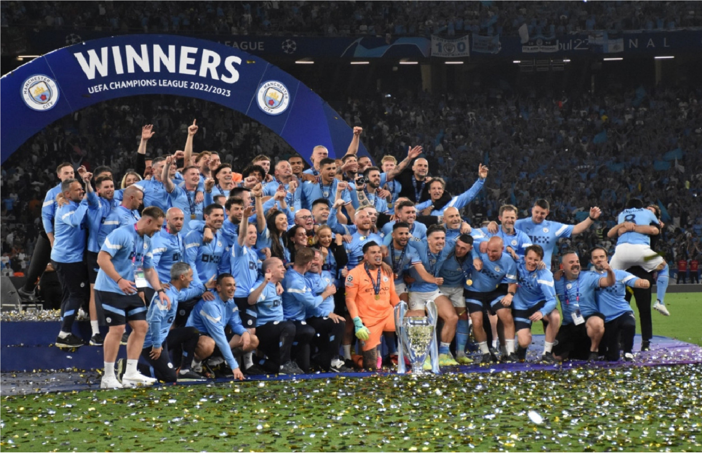

A então esperada fase "mata-mata", que meche com os corações de todos amantes de futebol, se iníciou em 13 de fevereiro. Das 64 equipes que iniciaram o campeonato, sobraram 32 e já hoje nas semifinais temos somente 4 equipes vivas no campeonato.
Mata-Mata; UEFA Champions League.
Atuais Campeões;



Como favoritos, temos a participação dos dois maiores candidatos ao título, Manchester City e Real Madrid, que sem dificuldades eliminaram Copenhague e Leipzig, após os dois se classificarem vão se encontrar nas Quartas de Finais, fazendo que esse seja o principal conflito da Champions League, por causa de seu historico de embates na história da competição.
Histórico de City X real Madrid na competição;
City e Real se enfrentaram um total de 12 vezes, e quem leva a melhor no placar histórico são os ingleses que venceram quatro vezes, contra três dos espanhóis. Os confrontos ainda terminaram empatados em outras cinco ocasiões.
Primeiro Confronto
O primeiro confronto foi em 18 de setembro, com os Madrilenhos ficando com a vitoria por 3 a 2 em um grande jogo.
Segundo Confronto
No segundo confronto, tivemos um empate no Etihad Stadium em 1 a 1.
Terceiro Confronto
Terceiro confronto teve o primeiro e o ultimo 0 a 0, em um jogo frio.
Quarto Confronto
Quarto confronto teve o primeiro e o ultimo 0 a 0, em um jogo frio.
Quinto Confronto
Quinto confronto teve o primeiro e o ultimo 0 a 0, em um jogo frio.
Sexto Confronto
Sexto confronto teve o primeiro e o ultimo 0 a 0, em um jogo frio.
Setimo Confronto
Setimo confronto teve o primeiro e o ultimo 0 a 0, em um jogo frio.
Oitavo Confronto
Oitavo confronto teve o primeiro e o ultimo 0 a 0, em um jogo frio.
Nono Confronto
Nono confronto teve o primeiro e o ultimo 0 a 0, em um jogo frio.
A Uefa por meio de um sorteio definiu os confrontos das oitavas de final, desta edição 23/24. CLIQUE AQUI, Para analisar os confrontos.